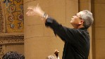

Member Information
Joining the Chorus
The Stanford Symphonic Chorus is open to all students, faculty, staff and any other residents of the community interested in singing wonderful music.
Members who are not students or faculty pay a modest (currently $60) participation fee. This money helps to offset expenses, the largest of which is hiring orchestras.
Auditions
New members are normally accepted by audition at the beginning of each academic quarter. If you are interested in auditioning for the chorus for the fall quarter of 2016, please email .
Auditions take about ten minutes, are very "user-friendly," and consist of:
- Vocalizing (singing scale passages, or similar) with piano support to determine range.
- Pitch memory exercises (we'll play three or four notes in sequence on the piano, and you sing them back).
- Picking pitches out of a chord texture (we play three pitches simultaneously on the piano, and ask you to sing the highest, middle, or lowest pitch).
- Simple sight singing
- 30 seconds to a minute of a prepared song. This can be anything that you enjoy singing: art song, aria, musical theatre number, jazz tune, hymn tune, children's song, or the ever popular choices of: first verse of My country 'tis of thee, Amazing Grace, Edelweiss, etc.
NB: Due to facilities restrictions, the Symphonic Chorus is capped at a maximum of 220 members. For potential new members wishing to join the ensemble, please understand that members who have made the full year-long commitment in previous seasons have first priority. New members will be accepted as space allows, with voice part and section balances taken into account.
Expectations
Learning the Music
Each singer is expected to learn the music assigned for each rehearsal on his or her own. Beyond the first reading of a work, rehearsal time will be devoted to the development of ensemble sound, interpretation, and other musical matters. It is further expected that each singer will make a reasonable effort to develop his or her own vocal skills, and will make every effort to contribute in a positive manner to the work of the group.
Concert Dress
Men wear tuxedos or a tuxedo-like suits (i.e., black; not grey, brown or blue), white shirt, black bow tie, black shoes and socks. Women wear all black: long dress, or long black skirt or slacks with long-sleeved (preferably) or short-sleeved black blouse, and black shoes. Please no sleeveless tops and no flashy jewelry.
Covering Your Music
For performances music must be put in a black folder or notebook, or bound with a black cover. Don't wait until the last minute to find a cover which will be practical in performance! (See Music Folders on this page for resources.)
Fragrance-Free Policy
Several people in the chorus are particularly sensitive to scented products such as perfume and hair spray; all of us have to sing in close quarters and benefit by having air to breathe which is as pure as possible. On all rehearsal days, and especially on dress rehearsal and performance days, we request you do not use any such products. For further information, including information on obtaining scent-free alternatives, see extensive guidelines.
Rehearsals
Rehearsals are held Monday evenings from 7:30 to 10:00 in Campbell Recital Hall in the Braun Music Building, but please be early for the first rehearsal, since it will take extra time to get everyone signed up and to distribute the music, which will be available at the rehearsal. Sign ups start at 6:30 p.m.
In addition, there are optional but warmly encouraged sectional rehearsals on selected Wednesday evenings from 5:30 to 6:30. Just before the performance we typically have two “dress rehearsals,” also mandatory, when we rehearse with the orchestra, usually in the hall in which we will be performing. Concert dress is not required or even recommended at these rehearsals. Other rehearsals are typically accompanied by piano only.
Members may miss up to two required rehearsals during the quarter. Members who miss more than two required rehearsals without prior arrangement with the director will not be allowed to participate in the performance. You must notify the director in advance if for any reason you must miss all or part of a rehearsal. For those participating for graded credit, every two unexcused absences may result in the lowering of the final grade by one letter.
Music
The music to be performed is always available at the first two rehearsals.
Parking
Parking for rehearsals can usually be found in the large lot on Mayfield Avenue closest to Braun (and Tresidder Student Union). There is no parking enforcement after 4 p.m. on weekdays. You may park for free in any pay or permit slot (except for disabled slots) for rehearsal.
Links for Singers
{kind=link}
{kind=link}

Music-Learning CD sites
These sites offer CDs or mp3 files to aid singers in learning choral parts.
Choralia.net
Note Perfect
SongLearning.com
The Choral Public Domain Library is a great resource for music scores and sound files that are in the public domain
Choral Public Domain Library
Rehearsal Schedule
Listing of rehearsals, sectionals and performances for the current quarter.